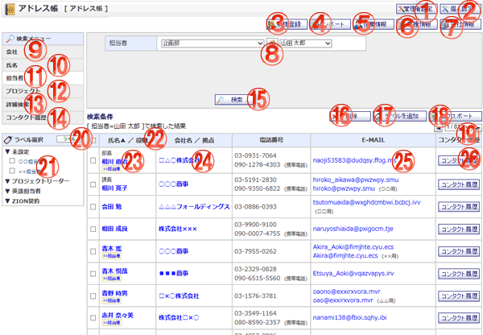

担当者情報でアドレス帳を検索し一覧を確認する画面です。

機能説明
管理者設定ボタン管理者設定メニュー画面へ遷移します。 |
個人設定ボタン個人設定メニュー画面へ遷移します。 |
|---|---|
新規登録ボタンアドレス登録画面へ遷移します。 |
インポートボタンアドレスインポート画面へ遷移します。 |
役職情報ボタン役職一覧画面へ遷移します。 |
業種情報ボタン業種一覧画面へ遷移します。 |
会社情報ボタン会社一覧画面へ遷移します。 |
グループボタンポップアップでグループ選択画面が開きます。 |
会社検索会社情報でアドレス帳を検索し一覧を確認する画面へ遷移します。 |
氏名検索氏名でアドレス帳を検索し一覧を確認する画面へ遷移します。 |
担当者検索担当者情報でアドレス帳を検索し一覧を確認する画面へ遷移します。 |
プロジェクト検索プロジェクト情報でアドレス帳を検索し一覧を確認する画面へ遷移します。 |
詳細検索検索会社情報・氏名・担当者情報などの条件でアドレス帳を検索し一覧を確認する画面へ遷移します。 |
コンタクト履歴検索コンタクト履歴の一覧を確認する画面へ遷移します。 |
検索ボタン入力した条件でアドレス帳の検索を行います。入力内容に不備がある場合エラーメッセージが表示されます。 |
削除ボタン選択したアドレスを一括削除します。 |
ラベル追加ボタンラベル選択ポップアップ画面が表示されます。表示したポップアップでOKボタンをクリックすると選択したラベルをアドレス情報に設定できます。 |
エクスポートボタン検索した表示結果をCSVファイル形式でエクスポートします。 |
ページコンボ・前頁・次頁ページコンボで任意のページへ、前頁アイコンクリックで前のページへ、次頁アイコンクリックで次のページへそれぞれ遷移します。 |
ラベル設定ボタンカテゴリ設定画面へ遷移します。 |
ラベル検索選択したラベルの検索結果が表示されます。 |
ヘッダタイトルクリックによって一覧のソート条件の切り替えを行います。現在ソート条件になっている項目をもう1度クリックすると「昇順」「降順」が切り替わります。 |
検索結果内容（氏名/役職/ラベル）氏名をクリックするとアドレス編集画面へ遷移します。 |
検索結果内容（会社名/拠点）会社名をクリックすると会社情報確認画面へ遷移します。 |
検索結果内容（E-MAIL）メールアドレスをクリックするとメールソフトが起動します。 |
コンタクト履歴ボタンコンタクト履歴一覧画面へ遷移します。 |
表示・入力項目説明
グループ
検索する担当者のグループを選択します。
担当者
検索する担当者を選択します。